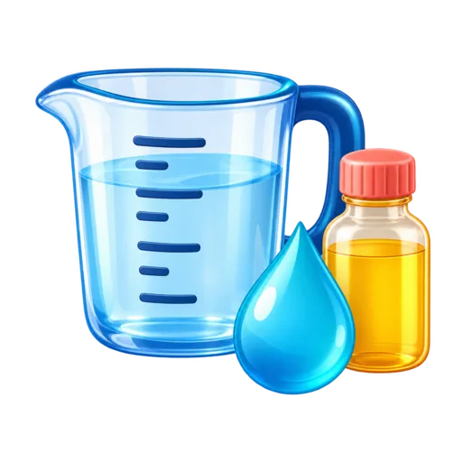

FERRAMENTA GRATUITA
Conversor de volume
Converta litros, mililitros, metros cúbicos, xícaras, pintas e galões.

Resultado
Como converter volume
Use esta ferramenta para transformar valores entre mililitros, litros, metros cúbicos, onças líquidas, xícaras, pintas e galões.
Conversões comuns
1 litro = 1.000 mL.
1 m³ = 1.000 litros.
1 galão dos EUA ≈ 3,785 litros.
1 galão imperial ≈ 4,546 litros.
Galão americano e imperial são iguais?
Não. Eles possuem volumes diferentes, por isso a ferramenta apresenta as duas opções separadamente.
Observação sobre xícaras
A opção de xícara desta página usa a medida de volume dos Estados Unidos. Para converter ingredientes de receitas em gramas, use o conversor culinário.
Veja também o conversor de peso e a calculadora de concreto.
Calculadoras relacionadas
Você também pode usar Conversor Culinário: Xícaras para Gramas, Calculadora de Concreto em m³ Online Grátis e Conversor de Área: m², Hectares, Acres e ft².